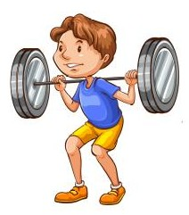
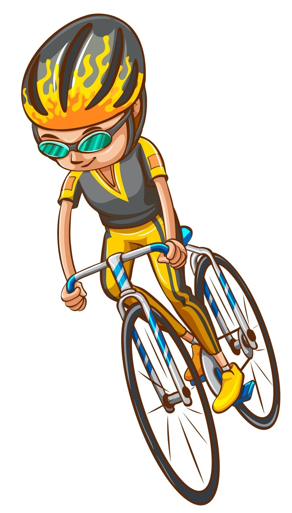
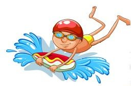

Hi, I'm Alex.
A computer programmer.

I am a web developer with many side interests such as sheep farming, triathlon racing and crossfit training.
I have a Masters in Entomology.



I am a web developer with many side interests such as sheep farming, triathlon racing and crossfit training.
I have a Masters in Entomology.
To find out more about me follow this link: Resume.
In my spare time I like to build things from wood or metal. I also like to work on my old car which I'm slowly rebuilding
I believe that everyone should take really good care of their mental health which is why I love to exercise and have many different interestss
 Gmail
Gmail